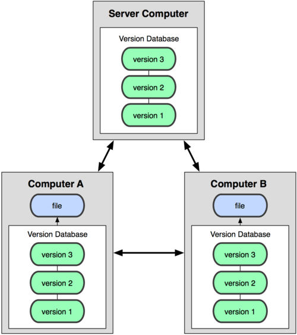
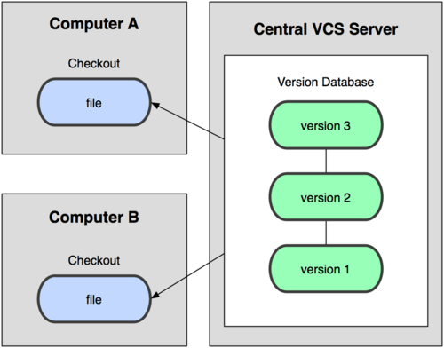
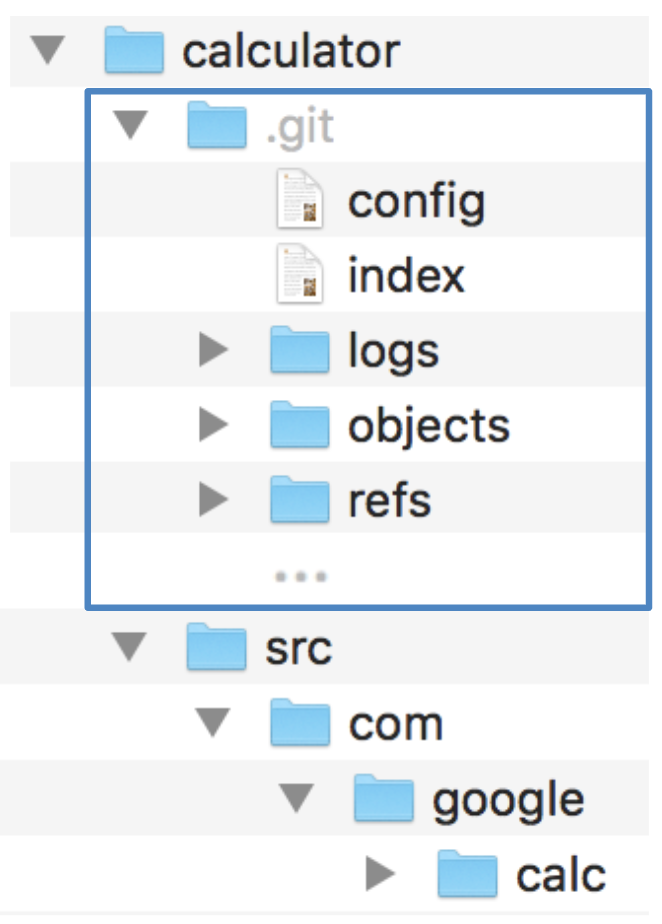
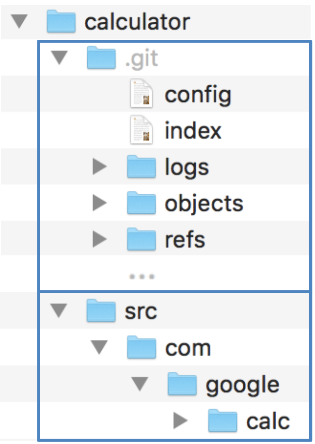
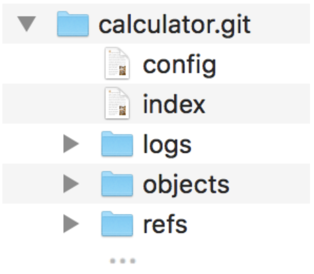
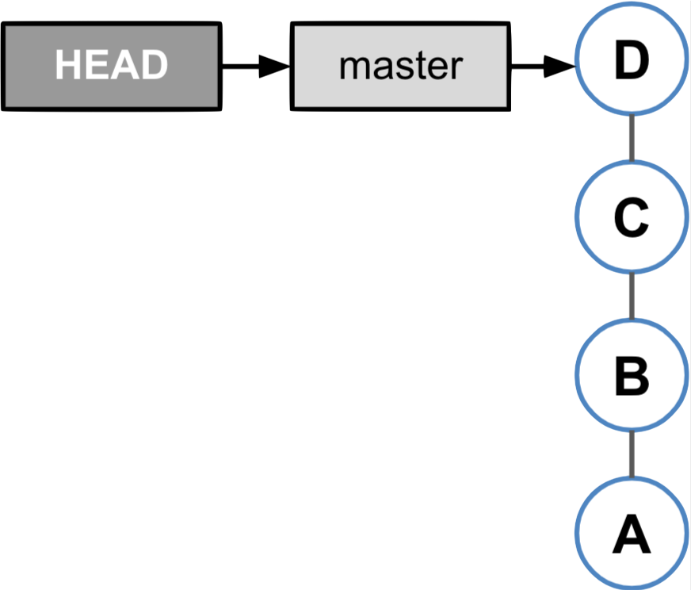
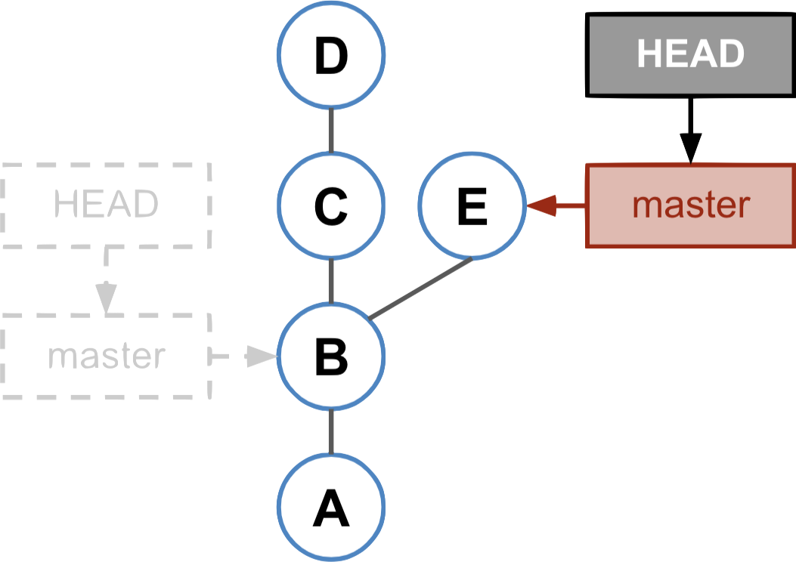

Distributed versioning systems
Distributed
Centralised
Image Credits : https://www.incredible-web.com/blog/revision-control-systems/
- Distributed means
- Each developer has a complete, local repository
- Technically the central repository is not different from the local repositories
- Easy offline usage
- Easy to branch a project
- Examples: Git, Mercurial, Bazaar
Git Repository Structure

Git Repository Structure
Git Repository Structure
Git Repository Structure
Commit Object Structure
Amend commit
Resetting Branches

HEAD is at tip of branch

After reset
New Commit after reset
- The new commit becomes successor of the commit to which the current branch points.
- The current branch is updated.
Tag